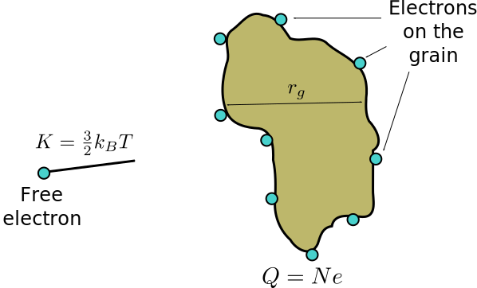
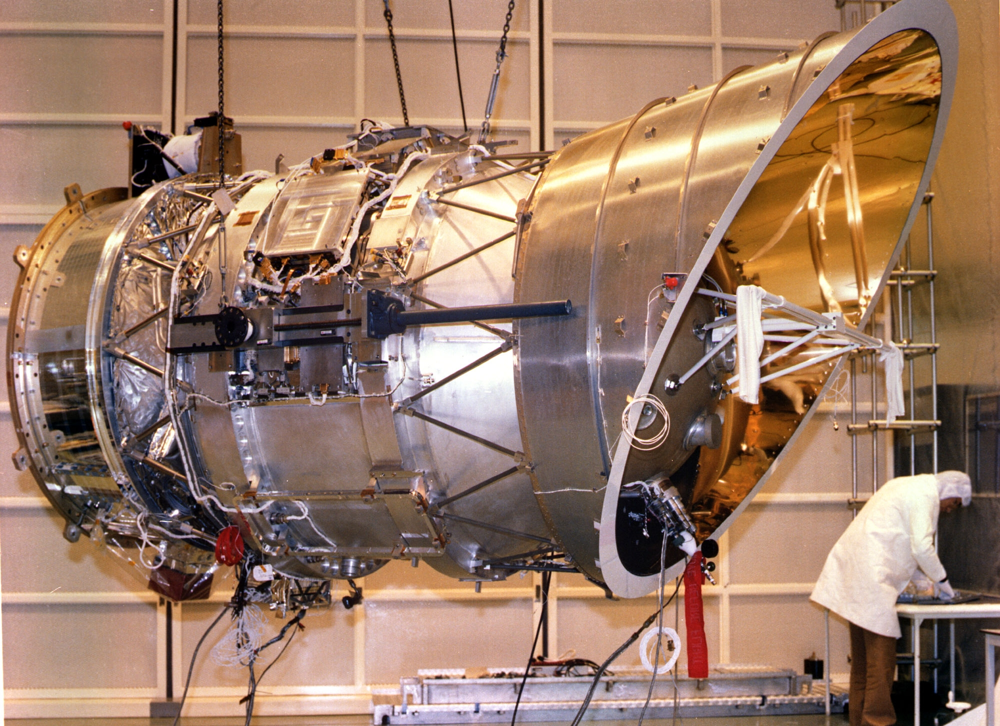
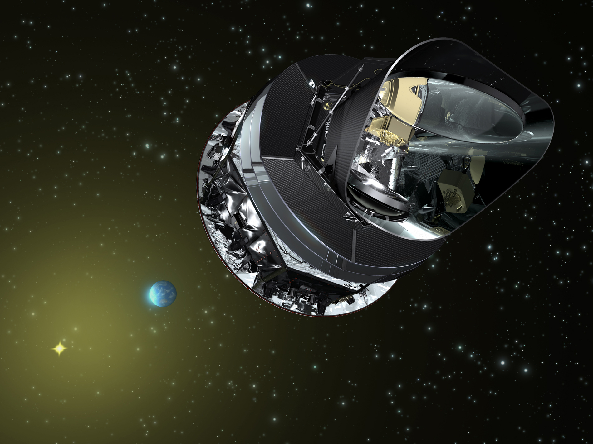
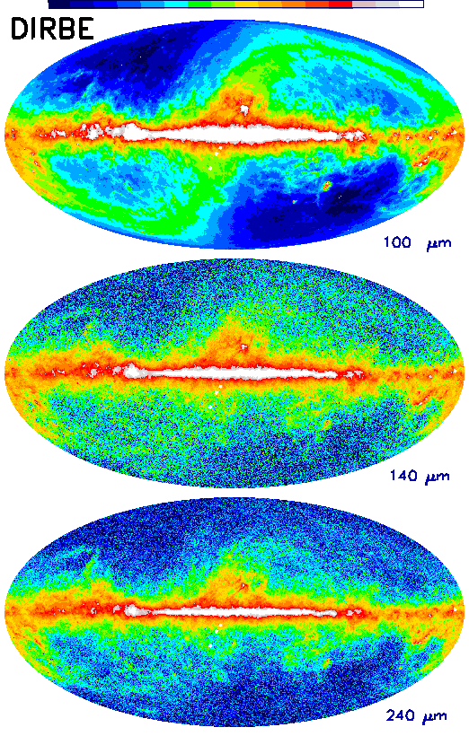

Dust grains (a) can collide with each other and aggregate into more
complex structures (b).
Electric Charge of Grains
The interaction of grains with electromagnetic fields indicates
that they are not electrically neutral (but the ISM is
globally!).
There are two mechanisms that allow charge to accumulate on the
grains:
“Slow” free electrons attach to the grain surface;
Photoelectric effect caused by UV photons (not very important if
A_V is large, because in that case the
dust shields the photons).
Let’s now consider the first case.
Electric Charge of Grains

Electrons can stick on the grain’s surface if the kinetic energy of
the electron is greater than the Coulomb potential of the grain (with
r_g about 1µm). In this case, T is the temperature of the grain cloud.
Electric Charge of Grains
The calculation is not very different from the one for the collision
radius for globular clusters: we study when the potential energy is
equal to the kinetic energy:
\begin{aligned}
\frac{N e^2}{4\pi\epsilon_0 r_g} &= \frac32 k_B T,\quad\text{from
which} \\
N &= 6\pi\epsilon_0 k_B T \frac{r_g}{e^2} \approx 1.
\end{aligned}
The high-velocity tail in the Boltzmann distribution for free
electrons leads to N \sim 10.
Grain Temperature
Let’s now estimate the average temperature of a single
dust grain. We can assume that they are heated by nearby stars.
Suppose a grain is at a distance d from a star with radius R and temperature T, and that the star’s luminosity is
L = 4\pi R^2 \sigma T^4
(spherically symmetric black body).
Grain Temperature
The fraction of power hitting the grain is
f = \frac{\pi r^2_g}{4\pi d^2} = \frac14\,\left(\frac{r_g}{d}\right)^2.
If the grain has albedo a, it
absorbs a power
P_\text{abs} = f\,L\,(1 - a) = (1 - a) r_g^2 \sigma T^4 \left(\frac{\pi
R^2}{d^2}\right),
where \pi R^2/d^2 \equiv
\Omega_* is the solid angle of the star as seen from the
grain.
Grain Temperature
To calculate the grain’s temperature at thermal equilibrium, we
must also consider the power released by the grain.
Let’s assume it is spherical (horrible!), so that
P_\text{rad} = 4\pi r_g^2 \sigma T_g^4,
where we use the so-called effective
temperatureT_g, i.e., the
temperature of a black body that would emit the same amount of energy as
the grain.
Grain Temperature
If the dust has reached the equilibrium temperature T_g, the emitted power must equal the
absorbed power:
\begin{aligned}
P_\text{rad} &= P_\text{abs} \\
4\pi r_g^2 \sigma T_g^4 &= (1 - a) r_g^2 \sigma T^4
\left(\frac{\pi R^2}{d^2}\right) \\
T_g &= T (1 - a)^{1/4} \sqrt{\frac{R}{2d}}.
\end{aligned}
Grain Temperature
The formula
T_g = T (1 - a)^{1/4} \sqrt{\frac{R}{2d}}
shows that the dust temperature does not depend on the size of
the grains.
This is the temperature of a single dust grain, but we
can assume that at equilibrium it coincides with the temperature of the
radiation emitted by the entire cloud of grains.
Grain Temperature
In star-forming regions, the distances between cloud and star are
on the order of a few AU (\sim
10^{11}\,\text{m}), so d/R \sim
10^3\div 10^4 and therefore T_g \sim
10^{-2} T_*.
If T_* = 10\,000\,\text{K}, then
T_g \sim 100\,\text{K}.
From Wien’s law (\lambda_\text{max} T =
0.29\,\text{cm\,K}) we deduce that the peak of the emission
is:
30 µm (IR) if T =
100\,\text{K};
0.3 mm (sub-mm) if T =
10\,\text{K}.
Interstellar Dust
Li, A. & Draine, B. T. 2001, Astrophys. J., 554,
778–802
Observations from Space

IRAS (Infrared Astronomical Satellite), 25/1/1983: First IR survey
(12, 25, 60, 100 µm) of the whole sky. Geocentric orbit (h \approx 900\,\text{km}).
ISO (Infrared Space Observatory), 17/11/1995. Highly eccentric orbit
(1000 km \div 70 000 km).
Eccentric orbits
At apogee (maximum distance from Earth) the satellite moves very
slowly: it is easier to make long observations
The radiation belts are significant near perigee (minimum distance
from Earth): ISO used to switch off its instruments for 7 hours each
day.
Spitzer Space Telescope (USA), 25/8/2003. Heliocentric orbit (IRrelevant
astronomy)
Herschel (ESA), 14/5/2009. Heliocentric orbit around L_2 (d =
1.5\times10^9\,\text{m}).

Planck (ESA), 14/5/2009. Heliocentric orbit around L_2 (d =
1.5\times10^9\,\text{m}). Mostly mm, but up to 350 µm.
If the grain is paramagnetic, the Galactic field \vec B_\text{Gal} induces a magnetic moment
\vec \mu_B \propto \vec B_\text{Gal}
parallel to it, which causes a mechanical torque \vec\tau = \vec\mu_B \times \vec
B_\mathrm{Gal}. Then:
If the grain rotates as in case a of the previous
figure, the rotation leads \vec
B_\text{Gal} and \vec \mu_B to
misalign. To realign, \vec \mu_B
induces an opposing torque.
If the rotation axis is parallel to \vec B_\text{Gal}, there is no
torque.
Therefore, the rotation axis tends to align with \vec B_\text{Gal} (paramagnetic
relaxation).
Anomalous Emission
In 1995, Kogut et al. published a paper measuring the
correlation between the sky emission at 140 µm (measured by COBE-DIRBE)
and at 31.5 GHz (measured by COBE-DMR).
These studies sought to characterize the relative contribution of
different emissions around the microwave region, in order to better
isolate the CMB signal (which we will see in more detail in the last
part of the course).

(The correlation is between the 31.5 GHz map and the 140 µm map).
Emission types
Origin of the Correlation
The synchrotron signal is generated by cosmic rays, which should
not be correlated with dust.
Yet this is what is observed! Three possibilities:
Dust also emits at synchrotron frequencies;
Cosmic rays also emit at dust frequencies;
Something else (what?) emits at both synchrotron and dust
frequencies.
Rotating Grains
In 1998, A. Lazarian and B. T. Draine proposed that the grains of
polycyclic aromatic hydrocarbons (PAHs) emit in the spectral region
around 30 GHz, due to their rotation.
The physical model is simple, even if the details are extremely
complicated!
Rotating Grains
Suppose that the grains have an electric dipole moment \vec \mu = q \vec r and that they are
rotating with angular velocity \omega
We then expect them to emit photons with frequency \nu = \omega/2\pi.
If the grains are in thermal equilibrium, have angular momentum
L \gg h and are set in rotation mainly
by collisions, then
\frac12 I \left<\omega^2\right> \approx \frac32 k_B T, \qquad
\text{with } I =
\frac25 M a^2 = \frac8{15} \pi \rho a^5.
Caveats
The assumption that all the collision energy is converted into
rotational energy is an approximation: in reality it is estimated that
part of the energy (10–20 %) is converted into vibrational modes.
The assumption that the angular momentum L is much greater than h allows the use of classical physics, where
the angular momentum is not quantized: this is always true, because the
smallest grains have L/h \sim 70.
Rotating Grains
The solution can be written in this form:
\begin{aligned}
\nu = \frac{\sqrt{\left<\omega^2\right>}}{2\pi} =
&32\,\text{GHz}\times\left(\frac{T}{100\,\text{K}}\right)^{1/2}\times
\\
&\times\left(\frac{2\,\text{g/cm}^3}\rho\right)^{1/2}\times\left(\frac{5\,\text{\AA}}a\right)^{5/2}.
\end{aligned}
(Only grains with a \lesssim
10\,\text{\AA} contribute to this emission, see Fig. 7 of Draine
& Lazarian, 1998). The predicted emission peak is around 30 GHz:
encouraging!
Rotating Grains
For a realistic model, other effects must also be taken into
account:
Ion collisions (Coulomb forces);
Coupling between \vec \mu and the
electromagnetic field;
Absorption/emission of photons (due to their angular momentum);
H₂ formation;
Etc.
Rotating Grains
A more detailed model predicts that
\left<\omega^2\right> \lesssim 3 k_B \frac{T}I.
The result is still that the predicted spectrum has an emission
peak around a few tens of GHz.
Obviously, detailed models also estimate the
intensity, in order to compare it with the measured
one. (A complete model must therefore take into account the average
surface of the grains, their emissivity, their shape, etc.)